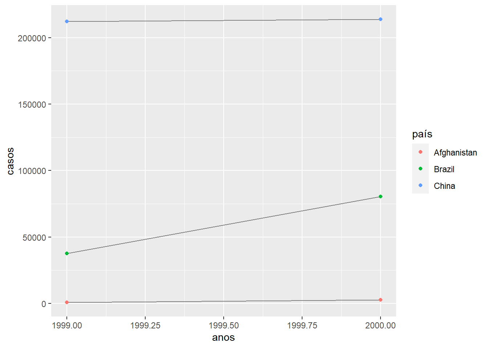
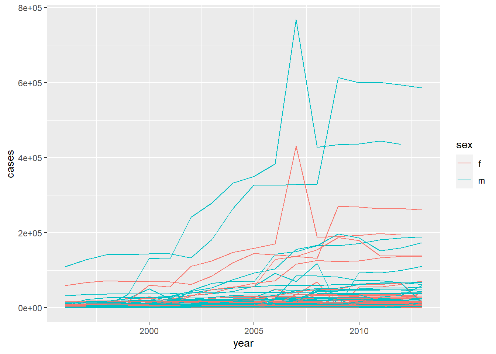

Capítulo 9 Arrumando dados com tidyr
9.2 Dados arrumados (Tidy Data)
Exercício 9.2.1
Usando a prosa, descreva como as variáveis e as observações estão organizadas em cada uma das tabelas de exemplo.
Solução. Antes de iniciarmos a discussão, vale ressaltar que as variáveis de interesse são o nome do país, o ano do registro, o total de casos de tuberculose registrados e a população estimada para o ano de registro. Dito isso, vamos analisar cada uma das tabelas.
## # A tibble: 6 × 4
## country year cases
## <chr> <dbl> <dbl>
## 1 Afghanistan 1999 745
## 2 Afghanistan 2000 2666
## 3 Brazil 1999 37737
## 4 Brazil 2000 80488
## 5 China 1999 212258
## 6 China 2000 213766
## # ℹ 1 more variable:
## # population <dbl>Em table1, as variáveis estão dispostas nas colunas, as informações nas linhas e os dados nas células da tabela. Este é o formato tidy, com os dados organizados de forma clara e consistente com o tidyverse.
## # A tibble: 12 × 4
## country year type count
## <chr> <dbl> <chr> <dbl>
## 1 Afghani… 1999 cases 7.45e2
## 2 Afghani… 1999 popu… 2.00e7
## 3 Afghani… 2000 cases 2.67e3
## 4 Afghani… 2000 popu… 2.06e7
## 5 Brazil 1999 cases 3.77e4
## 6 Brazil 1999 popu… 1.72e8
## 7 Brazil 2000 cases 8.05e4
## 8 Brazil 2000 popu… 1.75e8
## 9 China 1999 cases 2.12e5
## 10 China 1999 popu… 1.27e9
## 11 China 2000 cases 2.14e5
## 12 China 2000 popu… 1.28e9Já em table2, as coisas são um pouco diferentes. As variáveis country e year estão organizadas nas colunas, porém o número de casos e o tamanh da população se encontram distribuídos em mais de uma linha. Em outras palavras, para encontrar uma única obsevação nesta tabela, é preciso analisar duas linhas: numa delas se encontrará o número total de casos de tuberculose naquele país e ano e, na outra, se encontrará o tamanho da população.
Vamos à table3:
## # A tibble: 6 × 3
## country year rate
## <chr> <dbl> <chr>
## 1 Afghanistan 1999 745/19987…
## 2 Afghanistan 2000 2666/2059…
## 3 Brazil 1999 37737/172…
## 4 Brazil 2000 80488/174…
## 5 China 1999 212258/12…
## 6 China 2000 213766/12…Nesta tabela, dois valores estão combinados na coluna rate. Apesar de cada linha ter a observação completa, é necessário realizar uma operação para extrair o número de casos e o tamanhpo da população.
Por fim, analisaremos a tabela 4, que é composta por duas tabelas, na verdade:
## # A tibble: 3 × 3
## country `1999` `2000`
## <chr> <dbl> <dbl>
## 1 Afghanistan 745 2666
## 2 Brazil 37737 80488
## 3 China 212258 213766Em table4a temos o número de casos, sendo que a variável year está representada em colunas.
## # A tibble: 3 × 3
## country `1999` `2000`
## <chr> <dbl> <dbl>
## 1 Afghanistan 2.00e7 2.06e7
## 2 Brazil 1.72e8 1.75e8
## 3 China 1.27e9 1.28e9Na table4b, temos o mesmo problema de distribuição da variável year, porém nela encontramos o tamanhpo da população distribuida entre as células.
Exercício 9.2.2
Calcule o rate para table2 e table4a + table 4b. Você precisará realizar quatro operações:
- Extraia o número de casos de TB por país por ano.
- Extraia a população correspondente por país por ano.
- Divida os casos por população e multiplique por 10.000.
- Armazene no local adequado.
Com qual representação é mais fácil trabalhar? Com qual é mais difícil? Por quê?
Solução. Iniciaremos com a tabela table2.
header <- table2 %>%
distinct(country, year)
cases <- table2 %>%
filter(type == "cases") %>%
select(count)
population <- table2 %>%
filter(type == "population") %>%
select(count)
rates <- (cases$count * 10000) / population$count
new_table2 <- tibble(
header,
cases = cases$count,
population = population$count,
rate = rates
)
new_table2## # A tibble: 6 × 5
## country year cases
## <chr> <dbl> <dbl>
## 1 Afghanistan 1999 745
## 2 Afghanistan 2000 2666
## 3 Brazil 1999 37737
## 4 Brazil 2000 80488
## 5 China 1999 212258
## 6 China 2000 213766
## # ℹ 2 more variables:
## # population <dbl>,
## # rate <dbl>Para as tabelas table4a e table4b, temos o seguinte:
(rates <- tibble(
country = table4a$country,
`1999` = table4a$`1999` * 10000 / table4b$`1999`,
`2000` = table4a$`2000` * 10000 / table4b$`2000`
))## # A tibble: 3 × 3
## country `1999` `2000`
## <chr> <dbl> <dbl>
## 1 Afghanistan 0.373 1.29
## 2 Brazil 2.19 4.61
## 3 China 1.67 1.67Exercício 9.2.3
Recrie o gráfico mostrando a mudança nos casos com o passar do tempo usando table2, em vez de table1. O que você precsa fazer primeiro?
Solução.
table2 %>%
group_by(country, year) %>%
filter(type == "cases") %>%
select(count) %>%
ggplot(aes(year, count)) +
geom_line(aes(group = country), color = "gray50") +
geom_point(aes(color = country)) +
labs(
y = "casos",
x = "anos",
color = "país"
)## Adding missing grouping variables: `country`, `year`
9.3 Espalhando e reunindo
Exercício 9.3.1
Por que gather() e spread() não são perfeitamente simétricos? Considere cuidadosamente o exemplo a seguir:
stocks <- tibble(
year = c(2015, 2015, 2016, 2016),
half = c( 1, 2, 1, 2),
return = c(1.88, 0.59, 0.92, 0.17)
)
stocks %>%
spread(year, return) %>%
gather("year", "return", `2015`:`2016`)(Dica: observe os tipos de variáveis e pense sobre nomes de colunas.)
Ambos spread() e gather() tês um argumento convert. O que ele faz?
Solução. Ao espalhar e, depois, reunir os dados de um mesmo tibble, os tipos podem não ser conservados. No exemplo dado, os valores da variável ano acabam sendo convertidas para string. É possível efetuar uma conversão desses valores usando o parâmetro convert. Neste caso, o R buscará inferir o tipo de dado, ainda assim, os tipos podem não coincidir com o original.
Exercício 9.3.2
Por que este código falha?
table4a %>%
gather(1999, 2000, key = "year", value = "cases")Solução. O método gather espera receber uma lista com os nomes das colunas que se deseja juntar. Para tal, é necessário informar ou o nome das colunas ou os seus índices. Como, no caso acima, foram informados números inteiros, a rotina os interpretará como índices das colunas, contudo o tibble não tem essa quantidade de colunas.
A solução para o problema é a seguinte:
## # A tibble: 6 × 3
## country year cases
## <chr> <chr> <dbl>
## 1 Afghanistan 1999 745
## 2 Brazil 1999 37737
## 3 China 1999 212258
## 4 Afghanistan 2000 2666
## 5 Brazil 2000 80488
## 6 China 2000 213766Exercício 9.3.3
Por que espalhar esse tibble falha? Como você poderia adicionar uma nova coluna para corrigir o problema?
people <- tribble(
~name, ~key, ~value,
#------------------/---------/-------
"Phillip Woods", "age", 45,
"Phillip Woods", "height", 186,
"Phillip Woods", "age", 50,
"Jessica Cordero", "age", 37,
"Jessica Cordero", "height", 156
)Solução. Como existem dois valores de age para o registro em nome de Phillip Woods, a função spread não pode decidir qual delas utilizar. Para corrigir o problema, séria necessário verificar qual dos dois registros de idade de Phillip é o correto e excluir o outro.
9.4 Separando e unindo
Exercício 9.4.1
O que os argumentos extra e fill fazem em separate()? Experimente as várias opções para os dois conjuntos de dados de brinquedos a seguir:
tibble(x = c("a,b,c", "d,e,f,g", "h,i,j")) %>%
separate(x,c("one", "two", "three"), extra = "merge")## # A tibble: 3 × 3
## one two three
## <chr> <chr> <chr>
## 1 a b c
## 2 d e f,g
## 3 h i j## Warning: Expected 3 pieces. Missing pieces filled with `NA` in 1 rows [2].## # A tibble: 3 × 4
## x one two three
## <chr> <chr> <chr> <chr>
## 1 a,b,c a b c
## 2 d,e d e <NA>
## 3 f,g,i f g iSolução. Durante a separação de um data frame, o parâmetro extra indica o que fazer quando houver mais valores excedendo a quantidade de colunas parametrizada. Da mesma forma o argumento fill indica o que fazer quando há menos argumentos do que a quantidade de colunas solicitada.
Exercício 9.4.2
unite() e separate() têm um argumento remove. O que ele faz? Por que você o configuraria como FALSE?
Solução. O argumento remove é utilizado para determinar se os valore originais serão mantidos numa coluna do data set resultante. Podemos usar remove = FALSE quando desejarmos manter a configuração original para efeito de comparação e controle.
Exercício 9.4.3
Compare e contraste separate() e extract(). Por que há três variações de separação (por posição, por separador e com grupos), mas apenas uma para união?
Solução. Enquanto separate() usa um separador ou posição de caracter numa string para realizar a separação, extract() usa uma expressão regular, o que torna o processo mais dinâmico. Com extract() pode-se, por eexemplo, tratar variáveis cujos valores tem diferentes tipos de separador.
O objetivo de separate() e extract() é separar uam coluna em várias. Existem diversas formas pelas quais a coluna a ser separada estará disposta, por isso existem várias formas de realizar a separação. Já no caso de unite(), o objetivo é juntar colunas em uma única e, assim, não há muitas opções a serem expressas, não sendo necessárias outras sobreposições.
9.5 Valores faltantes
Exercício 9.5.1
Compare e contraste os argumentos fill de spread() e complete().
Solução. Em spread(), o argumento fill é um caractere a ser utilizado quando um valor faltante for encontrado. Já em complete(), é possível informar uma lista nomeada indicando qual valor será atibuidos aos valores faltantes em cada uma das colunas.
Exercício 9.5.2
O que o argumento de direção de fill() faz?
Solução. O argumento é utilizado para controlar a forma como serão preenchidos os valores valtantes.
A opção padrão é down, que preenche os valores faltantes de uma coluna com o valor da linha imediatamente acima. up preenche com o valor imediatamente abaixo. updown e downup parecem ser redundantes. Verificar.
treatment <- tribble(
~person, ~treatment, ~response,
"Derrick", 1, 7,
NA, 2,10,
NA, 3,9,
"Kath", 1, 4,
NA, 2, 6,
"TESTE", 1, 4,
)
treatment %>% fill(person, .direction = "up")## # A tibble: 6 × 3
## person treatment response
## <chr> <dbl> <dbl>
## 1 Derrick 1 7
## 2 Kath 2 10
## 3 Kath 3 9
## 4 Kath 1 4
## 5 TESTE 2 6
## 6 TESTE 1 4## # A tibble: 6 × 3
## person treatment response
## <chr> <dbl> <dbl>
## 1 Derrick 1 7
## 2 Derrick 2 10
## 3 Derrick 3 9
## 4 Kath 1 4
## 5 Kath 2 6
## 6 TESTE 1 4## # A tibble: 6 × 3
## person treatment response
## <chr> <dbl> <dbl>
## 1 Derrick 1 7
## 2 Derrick 2 10
## 3 Derrick 3 9
## 4 Kath 1 4
## 5 Kath 2 6
## 6 TESTE 1 4## # A tibble: 6 × 3
## person treatment response
## <chr> <dbl> <dbl>
## 1 Derrick 1 7
## 2 Kath 2 10
## 3 Kath 3 9
## 4 Kath 1 4
## 5 TESTE 2 6
## 6 TESTE 1 49.6 Estudo de caso
Exercício 9.6.1
Neste estudo de caso eu configuro na.rm = TRUE só para facilitar a verificação de que tínhamos os valores corretos. Isso é razoável? Pense sobre como os valores faltantes são representados nesse conjunto de dados. Há valores faltantes implícitos? qual é a diferença entre um NAe zero?
Solução.
who %>%
gather(
new_sp_m014:newrel_f65,
key = "code",
value = "cases"
) %>%
mutate(
code = stringr::str_replace(code, "newrel", "new_rel")
) %>%
separate(code, c("new", "type", "sexage")) %>%
select(-new, -iso2, -iso3) %>%
separate(sexage, c("sex", "age"), sep = 1)## # A tibble: 405,440 × 6
## country year type sex
## <chr> <dbl> <chr> <chr>
## 1 Afghanis… 1980 sp m
## 2 Afghanis… 1981 sp m
## 3 Afghanis… 1982 sp m
## 4 Afghanis… 1983 sp m
## 5 Afghanis… 1984 sp m
## 6 Afghanis… 1985 sp m
## 7 Afghanis… 1986 sp m
## 8 Afghanis… 1987 sp m
## 9 Afghanis… 1988 sp m
## 10 Afghanis… 1989 sp m
## # ℹ 405,430 more rows
## # ℹ 2 more variables:
## # age <chr>, cases <dbl>Acima, repetimos o estudo de caso mantendo os valores faltantes explícitos. Para este exemplo, não faria muita diferença prática removê-los ou não, porém em outros cenários pode ser importante manter explícitos os valores faltantes, sobretudo no momento da comunicação dos resultados.
No exemplo utilizado, caso uma observação possua o valor NA para a variável casos, significa que não estão disponíveis dados sobre TB neste país e ano específico, ou seja, não se sabe se houveram ou não casos de TB. Já o valor zero representa que os dados estavam disponíveis para coleta e é certo que não houve nenhum novo caso de TB naquele ano.
Exercício 9.6.2
O que acontece se você negligenciar o passo mutate()? (mutate(key = stringr::str_replace(key, "newrel", "new_rel")))?
Solução. A operação é importante para o sucesso da análise, pois sem ela ocorre erro durante o passo de separação: é pedido para separar os valores em três colunas (new, type e sexage), porém só é encontrada uma divisão em alguns dos registros, gerando apenas as duas primeiras colunas (a terceira será preenchida com NA).
who %>%
gather(
new_sp_m014:newrel_f65,
key = "code",
value = "cases",
na.rm = TRUE
) %>%
separate(code, c("new", "type", "sexage")) %>%
select(-new, -iso2, -iso3) %>%
separate(sexage, c("sex", "age"), sep = 1) %>%
count(type)## Warning: Expected 3 pieces. Missing pieces filled with `NA` in 2580 rows [73467, 73468,
## 73469, 73470, 73471, 73472, 73473, 73474, 73475, 73476, 73477, 73478, 73479,
## 73480, 73481, 73482, 73483, 73484, 73485, 73486, ...].## # A tibble: 17 × 2
## type n
## <chr> <int>
## 1 ep 14304
## 2 f014 190
## 3 f1524 184
## 4 f2534 182
## 5 f3544 183
## 6 f4554 183
## 7 f5564 183
## 8 f65 185
## 9 m014 190
## 10 m1524 182
## 11 m2534 183
## 12 m3544 184
## 13 m4554 184
## 14 m5564 185
## 15 m65 182
## 16 sn 14342
## 17 sp 44820Exercício 9.6.3
Afirmei que iso2 e iso3 eram redundantes com country. Confirme essa afirmação.
Solução. Para encontrar a resposta, podemos contar os elementos distintos da tripla formada por country, iso2 e iso3:
## # A tibble: 0 × 3
## # Groups: country [0]
## # ℹ 3 variables:
## # country <chr>,
## # iso2 <chr>, iso3 <chr>Exercício 9.6.4
Para cada país, ano e gênero, calcule o número total de casos de TB. Faça uma visualização informativa dos dados.
Solução.
who %>%
filter( year > 1995) %>%
gather(
new_sp_m014:newrel_f65,
key = "code",
value = "cases",
na.rm = T
) %>%
mutate(
code = stringr::str_replace(code, "newrel", "new_rel")
) %>%
separate(code, c("new", "type", "sexage")) %>%
select(-new, -iso2, -iso3) %>%
separate(sexage, c("sex", "age"), sep = 1) %>%
group_by(country, year, sex) %>%
summarise(
cases = sum(cases)
) %>%
unite(country_sex, country, sex, remove = F) %>%
ggplot(aes(
x = year,
y = cases,
group = country_sex,
color = sex)
) +
geom_line()## `summarise()` has grouped output by 'country', 'year'. You can override using
## the `.groups` argument.